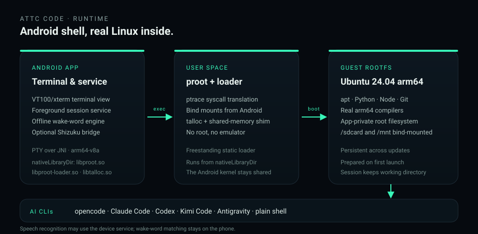

▣
Real Ubuntu 24.04
An arm64 userland running on proot. apt, Python, Node, Git and compilers are real binaries — no emulator layer.
Android 8+ · arm64 · GPL-3.0 · root not required
Attc Code boots a real Ubuntu 24.04 arm64 userland on your phone and launches opencode, Claude Code, Codex, Kimi and Antigravity in one tap. Say “Hey Attc” with the screen off and keep working.
Signed APK · Android 8.0+ · arm64 · no root
Why Attc Code?
An arm64 userland running on proot. apt, Python, Node, Git and compilers are real binaries — no emulator layer.
Choose opencode, Claude Code, Antigravity, Codex, Kimi or a plain terminal on every cold start. Warm sessions resume where you left off.
“Hey Attc” is matched fully offline with a personal MFCC/DTW model. Your Turkish sentence is transcribed into the active CLI.
With Shizuku, the bundled attc-ctl helper lets an agent open apps, play media, tap and take screenshots.
Extra key row, pinch-to-zoom, text selection, clipboard, file attachments and session switching — all one-handed.
Partial wake lock only while listening, optional Wi-Fi lock, battery exemption and automatic quota reset.
Architecture

proot translates syscalls with ptrace and runs from nativeLibraryDir, so Android's W^X rule is respected. The guest shares the Android kernel.
Ubuntu 24.04 arm64 lives in app-private storage. apt, Python, Node, Git and compilers are real arm64 binaries, and /sdcard is bind-mounted in.
A foreground service owns the PTY and the session. Pick opencode, Claude Code, Codex, Kimi or Antigravity at cold start; the working directory and model are kept warm.
Siri-like, but in your own voice
The wake word needs no cloud key. A personal MFCC/DTW model is built from three recordings on the phone; you choose the phrase and language model. After the wake word, Google speech recognition (tr-TR) turns your sentence into text and sends it to the CLI and model you last used.
attc-ctl bridge.
Screens

Install
Download the signed APK from GitHub Releases, or add the Attc Code F-Droid repository below. Android 8.0+ and arm64 are required.
The first launch prepares the Ubuntu root filesystem. With a connection, your chosen CLI is installed automatically.
Settings → Voice assistant → microphone permission → record “Hey Attc” three times. Then pick your wake phrase and battery exemption.
F-Droid
Add the Attc Code repository to the F-Droid client once. Updates arrive through F-Droid, and the APK signing key stays the same.
FAQ
No. Attc Code runs as a normal Android app. Shizuku is optional and only needed for phone control.
No. Attc Code is standalone and ships its own terminal, proot and Ubuntu root filesystem.
Android 8.0+ on arm64 phones and tablets.
Yes: a real arm64 Ubuntu 24.04 userland. It shares the Android kernel, so it is not a virtual machine.
The first launch downloads the Ubuntu base and your chosen CLI. AI CLIs need internet for their APIs. The wake word works offline.
App launching, media control, taps and screenshots through attc-ctl. Without it, the terminal and CLIs still work.
Wake-word samples and matching stay on the device. Speech recognition may use the device's Google speech service.
Install the latest APK or update through the Attc Code F-Droid repository. Your Ubuntu environment and sessions are preserved.